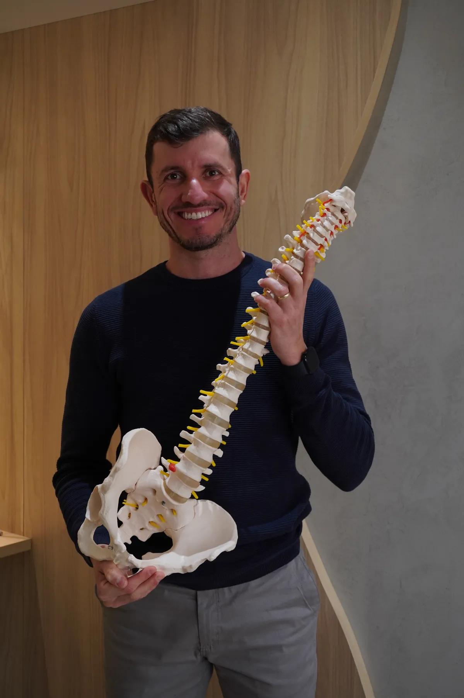
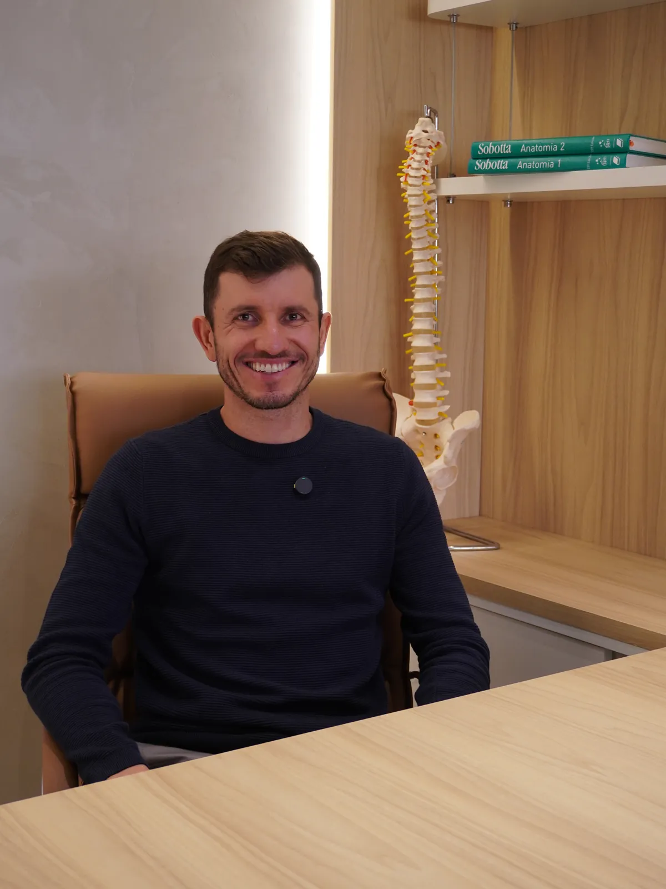
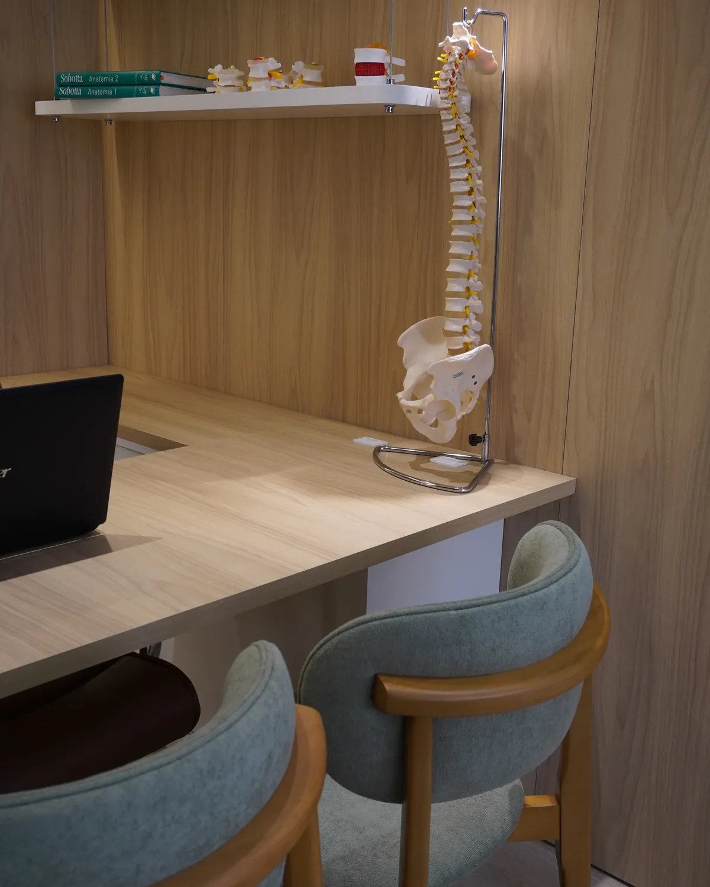
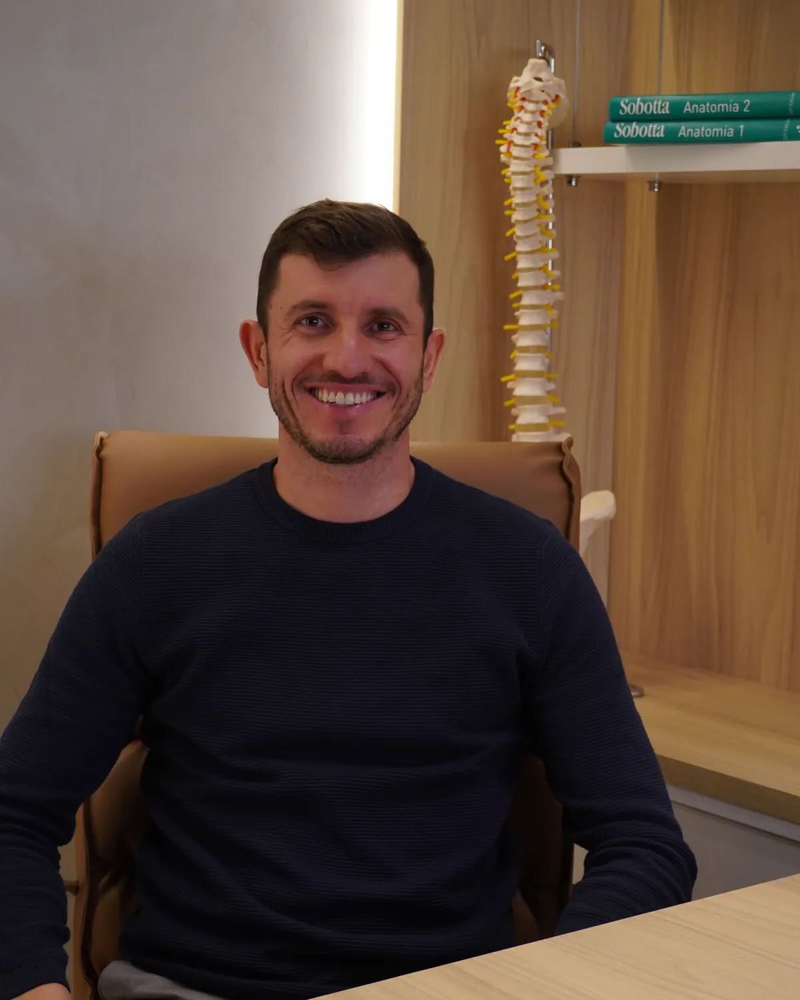

Destrave sua coluna, destrave seu corpo.
Fisioterapia e quiropraxia especializadas em coluna, no Estreito, em Florianópolis. Avaliação por movimento, conduta explicada e um plano feito para o seu caso.

A dor nas costas quase nunca é só uma questão de estrutura.
Mais de 90% das pessoas terão dor na coluna em algum momento da vida. Por isso a avaliação aqui não para na imagem do exame: ela considera também como você se move, o que você acredita sobre a sua dor e o que o medo de se mover está fazendo com a sua rotina.
Essa é a abordagem biopsicossocial, e ela muda a conversa. Em vez de tratar uma estrutura isolada, o trabalho é entender o conjunto — e devolver movimento a quem está travado.

Cinco etapas, sempre nesta ordem.
A avaliação é baseada em MDT (McKenzie), um método que usa a resposta do seu corpo a movimentos repetidos como bússola clínica. Nada de achismo.
Escuta
A consulta começa por uma conversa: quando a dor apareceu, o que piora, o que alivia, o que ela impede você de fazer. A história costuma explicar mais que a imagem do exame.
Avaliação por movimento
Testes com movimentos repetidos mostram como os seus sintomas respondem. É daí que saem a centralização e a preferência direcional — os dois achados que mais orientam a conduta e o prognóstico.
Explicação
Você entende o que foi encontrado, em português claro. Saber o que está acontecendo reduz o medo, e medo é um dos fatores que mantêm a dor por mais tempo.
Tratamento e autonomia
A conduta é definida a partir do seu caso, com técnicas manuais e exercícios. Junto vem o que fazer em casa — o objetivo é você depender cada vez menos da sessão.
Prevenção de recorrência
Sair da crise é metade do caminho. A outra metade é entender o que te levou até ela e ajustar o que der para ajustar na sua rotina.
Três frentes de trabalho.
A coluna segue sendo o carro-chefe. Com a chegada de novos profissionais, a clínica passou a atender também recuperação para quem treina e reabilitação ortopédica.
Coluna: fisioterapia e quiropraxia
Avaliação e tratamento de dores na lombar e no pescoço, agudas ou persistentes, com raciocínio clínico baseado no método MDT.
Conhecer
Recovery para quem treina
Liberação miofascial e bota pneumática para recuperação muscular entre treinos, provas e competições.
Conhecer
Fisioterapia ortopédica
Reabilitação pós-cirúrgica de joelho, tornozelo, ombro, pé e mão, e tratamento de dores ortopédicas em geral.
ConhecerO Google é hoje a principal porta de entrada da clínica.
Antes de marcar, a maior parte das pessoas lê o que outros pacientes escreveram. Por isso os relatos ficam onde estão: no perfil público, com nome e data, sem edição.
O Joel é um profissional muito atencioso e sempre disponível. Estava com uma dor intensa e com os exercícios adequados para manutenção em casa, tive uma melhora expressiva em pouco tempo.
Excelente atendimento e profissionalismo do Joel. O atendimento é realmente personalizado para atender as necessidades do cliente. Cheguei lá com a coluna e lombar travadas, sem conseguir entrar dentro do carro. Na primeira sessão de…
Desde o primeiro contato já fiquei impressionada. Enviei uma mensagem no WhatsApp perguntando como funcionava o atendimento, e o Joel fez questão de me mandar áudios explicando cada detalhe do procedimento, com toda atenção antes mesmo de…
Os textos acima são relatos pessoais de pacientes, publicados por eles no perfil do Google. Descrevem experiências individuais e não representam garantia de resultado: a resposta ao tratamento varia de pessoa para pessoa e depende de avaliação individual.
Do campo ao consultório.
O primeiro contato do Joel com a fisioterapia foi em 2004, aos 14 anos — como paciente. Em 2005 começou a carreira como jogador de futebol, que durou sete anos.
Formou-se fisioterapeuta em 2016 e passou quatro anos como fisioterapeuta esportivo do Figueirense FC, atendendo atletas da base e do profissional. Desde 2019 dedica-se ao tratamento de coluna, com formação em quiropraxia, ortopedia, traumatologia e fisioterapia desportiva.
É desse percurso que vem o jeito de atender: explicar o que está acontecendo, devolver movimento e ensinar a pessoa a cuidar da própria coluna.

Antes de marcar.
As perguntas que mais chegam pelo WhatsApp, respondidas sem rodeio.
Não. A fisioterapia tem acesso direto: você pode procurar o fisioterapeuta sem passar antes por um médico. Se você já tem exames, laudos ou relatórios de outros profissionais, leve — eles ajudam a compor o quadro.
Em situações que fogem do escopo da fisioterapia, ou quando algum sinal de alerta aparece durante a avaliação, o encaminhamento médico é indicado e faz parte de uma conduta responsável.
A primeira consulta é uma avaliação. Começa por uma conversa sobre a sua história: quando a dor começou, o que piora, o que alivia, como ela afeta o seu dia. Depois vêm os testes de movimento.
Ao final, você recebe uma explicação do que foi encontrado, quais são as possibilidades de conduta e o que dá para fazer em casa. O plano é construído a partir do seu caso — não existe protocolo pronto aplicado a todo mundo.
O MDT — Mechanical Diagnosis and Therapy — é um método de avaliação que usa movimentos repetidos para entender como a sua dor responde. A partir dessa resposta, é possível classificar o quadro e definir a direção de movimento mais adequada para o seu caso.
Dois achados são especialmente úteis: a centralização (quando a dor que irradia para braço ou perna se recolhe em direção à coluna) e a preferência direcional (quando uma direção de movimento melhora consistentemente os sintomas). Ambos ajudam a orientar a conduta e a estimar o prognóstico.
Uma parte importante do MDT é ensinar você a manejar a própria condição, reduzindo a dependência de sessões para se sentir bem.
Não. O estalo é apenas o som da liberação de gás dentro da articulação — ele não mede a qualidade nem a eficácia da técnica.
Existem várias formas de mobilizar uma articulação, com e sem manipulação. Se o estalo te incomoda ou te dá insegurança, avise: dá para conduzir o tratamento por outros caminhos. Nada é feito sem que você entenda e concorde.
Não há como responder isso antes de avaliar, e qualquer profissional que garanta um número exato está prometendo o que não pode cumprir.
O tempo de resposta varia com o tipo de problema, há quanto tempo ele existe, a sua rotina e a sua adesão às orientações. O que dá para fazer, e é feito, é reavaliar sessão a sessão e conversar abertamente sobre o que está ou não mudando.
No Estreito, com acesso rápido pela ponte.
O consultório fica na região continental de Florianópolis. Atende pessoas de toda a Grande Florianópolis — a concentração maior vem do Centro, do Continente e das cidades vizinhas.
- WhatsApp e telefone
- (48) 99637-3498
- Horário de atendimento
- Segunda-feira07:30 – 20:00
- Terça-feira08:00 – 20:00
- Quarta-feira08:00 – 20:00
- Quinta-feira08:00 – 20:00
- Sexta-feira08:00 – 20:00
- SábadoFechado
- DomingoFechado
Plus Code: CC6C+CC Estreito, Florianópolis - SC